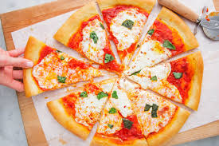
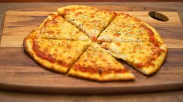
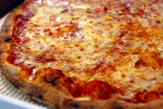

If you are new to this site then welcome, this is my food blog site.
Where I talk about great foods all over the world. This site has won
many rewards, the most notable ones are....
The Food Truth Award, JD Power Foods Award, The Austin Food Show Awards and finally The Worlds Best Food Reviewer Awards (2019)

I started reviewing foods and getting into the greater world of food when I was 7.
This all started when I went to a pizzaria that surved I dare to say the best pizza ever. The thing about it is that it was fresh. Before that I really didn't eat fresh foods.
After tasting that I really wanted to try other foods that were made fresh just that that pizza.
After trying new foods for about a month I really wanted to tell others about the food I ate and also wanted to recommend new foods that I've tried to other people
And after that moment my carrier just took off
|  | |
|  |  |
If you can't tell already pizza is my favorite food and has been for a long time.
It has been a food that when me and my family were tight on money, we can go and pick one up for a dollar.
It's a food that will always be with me and if given a choice, I would almost always pick pizza over any other food.
It smells like something I can't describe and it's taste is a perfect mix of cheese, tomato sauce, and bread.
No other food comes close to the flavour of pizza. It's honestly a food that almost no one can really mess up.